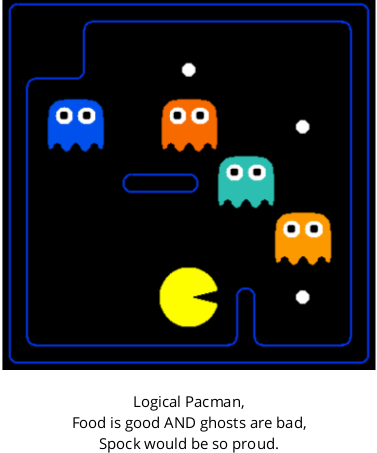
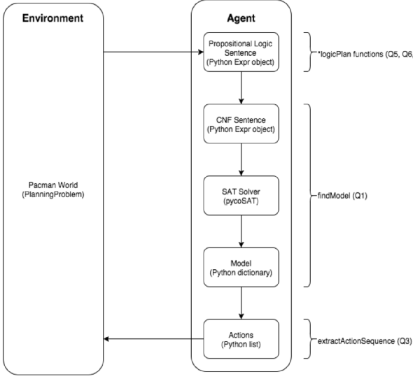
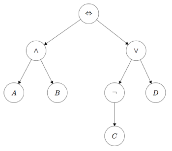

Introduction

In this project, your Pacman agent will logically plan his way to the goal. You will write software that generates the logical sentences describing moving, eating and (predictable) ghosts. You will encode initial states and goals and use logical inference to find action sequences that are consistent with these.
This diagram outlines the different steps of the propositional logic planning process.

As in Project 1, this project includes an autograder for you to grade your answers on your machine. This can be run with the command:
> python3 autograder.py
See the autograder tutorial in Project 1 for more information about using the autograder.
The code for this project consists of several Python files, some of which you will need to read and understand in order to complete the assignment, and some of which you can ignore. You can download all the code and supporting files as a zip archive here.
| Files you'll edit: | |
| logicPlan.py | Where all of your logic planning algorithms will reside. |
| Where all of your logic planning algorithms will reside. | |
| logic.py | Propsitional logic code originally from https://code.google.com/p/aima-python/ withmodifications for our project. There are several useful utility functions for working with logic in here. |
| logicAgents.py | The file that defines the three specific problems that Pacman will encounter in this project. |
| patrollingGhostAgents.py | Specific GhostAgents used for question 5. |
| pycosat_test.py | Quick test main function that checks that the pycosat module is installed correctly. |
| game.py | The logic behind how the Pacman world works. The only thing you might want to look at in here is the Grid class. |
| Supporting files you can ignore: | |
| pacman.py | The main file that runs Pacman games. |
| logic_util.py | Utility functions for logic.py |
| util.py | Utility functions primarily for other projects. |
| agentTestClasses.py | Project 1 specific autograding test classes |
| graphicsDisplay.py | Graphics for Pacman |
| graphicsUtils.py | Support for Pacman graphics |
| textDisplay.py | ASCII graphics for Pacman |
| ghostAgents.py | Agents to control ghosts |
| keyboardAgents.py | Keyboard interfaces to control Pacman |
| layout.py | Code for reading layout files and storing their contents |
| autograder.py | Project autograder |
| testClasses.py | General autograding test classes |
| test_cases/ | Directory containing the test cases for each question |
Files to Edit and Submit: You will fill in portions of logicPlan.py during the assignment. Before submission, you should compress this file into one single *.tar file. On Unix or Unix-like system, you can do this with the command:
> tar cvf submit.tar logicPlan.py
If you are using Windows, which you shouldn't, you can compress the file with 7-Zip. But make sure it's a *.tar file and if we extract it, we would get exactly one file logicPlan.py instead of a folder or anything else.
You need to submit your solution to our Autolab server, you can visit it at http://10.19.127.41/. If you have any question or find any bug of the platform, feel free to contact us. The email system may be slow and you may need to wait for a few minutes to receive your registration email. Please see the announcement on Piazza and BB for detailed instruction of how to register your account.
Evaluation: Your code will be autograded for technical correctness. Please do not change the names of any provided functions or classes within the code, or you will wreak havoc on the autograder. However, the correctness of your implementation -- not the autograder's judgements -- will be the final judge of your score. If necessary, we will review and grade assignments individually to ensure that you receive due credit for your work.
Academic Dishonesty: We will be checking your code against other submissions in the class for logical redundancy. If you copy someone else's code and submit it with minor changes, we will know. These cheat detectors are quite hard to fool, so please don't try. We trust you all to submit your own work only; please don't let us down. If you do, we will pursue the strongest consequences available to us.
Getting Help: You are not alone! If you find yourself stuck on something, contact the course staff for help. Office hours, section, and the discussion forum are there for your support; please use them. If you can't make our office hours, let us know and we will schedule more. We want these projects to be rewarding and instructional, not frustrating and demoralizing. But, we don't know when or how to help unless you ask.
SAT Solver Setup
A SAT (satisfiability) solver takes a logic expression which encodes the rules of the world and returns a model (true and false assignments to logic symbols) that satisfies that expression if such a model exists. To efficiently find a possible model from an expression, we take advantage of the pycosat module (https://pypi.python.org/pypi/pycosat), which is a python wrapper around the picoSAT library (http://fmv.jku.at/picosat/).
Unfortunately, this requires installing this module/library on eachmachine. To install this software on your own machine, please follow these steps:
1. Install pip (if you don't have it installed on your system already).Instructions: http://pip.readthedocs.org/en/latest/installing/ (Note:probably requires super-user (sudo) permissions)
2. Install pycosat: On command line run: pip install pycosat. (Note: you may need to run: sudo pip install pycosat). There should be no errors.
Testing pycosat installation:
1. After unzipping the project code and changing to the project code directory, run: python3 pycosat_test.py See pycosat_test.py in the project code. This should output: [1, -2, -3, -4, 5].
Please let us know if you have issues with this setup. This is critical to completing the project, and we don't want you to spend your time fighting with this installation process.
The Expr Class
In this project, you will be working with the Expr class defined in logic.py to build propositional logic sentences. An Expr object is implemented as a tree with logical operators ( ) at each node and with literals (A, B, C) at the leaves. The sentence:
would be represented as the tree

To instantiate a symbol named 'A', call the constructor like this:
A = Expr('A')
The Expr class allows you to use Python operators to build up these expressions. The following are the available Python operators and their meanings:
- ~A:
- A & B:
- A | B:
- A >> B:
- A % B:
So to build the expression, you would type this:
A = Expr('A')
B = Expr('B')
a_and_b = A & B
(Note that A to the left of the assignment operator in that example is just a Python variable name, i.e. symbol1 = Expr('A') would have worked just as well.)
One last important thing to note is that typing in A & B & C will give the expression ((A & B) & C). If instead you want (A & B & C), as you will for these problems, use logic.conjoin, which takes a list of expressions as input and returns one expression that is the conjunction of all the inputs. The & operator in Python is a binary operator and builds an unbalanced binary tree if you chain it several times,whereas conjoin builds a tree that is one level deep with all the inputs extending directly from the & operator at the root. logic.disjoin is similarly defined for |. The autograder for Question 1 will require that you use logic.conjoin and logic.disjoin wherever you could otherwise chain several & operators or several | operators. If you keep with this convention for later problems, it will help with debugging because you will get more readable expressions.
There is additional, more detailed documentation for the Expr classin logic.py.
Tips
- When creating a symbol with Expr, it must start with an upper case character. You will get non-obvious errors later if you don't follow this convention.
- Be careful creating and combining Expr instances. For example, if you intend to do x = Expr('A')&Expr('B'), you don't want to accidentally type x = Expr('A&B'). The former with be a logical expression of the symbol 'A' and the symbol 'B', while the latter will be a single symbol (Expr) named 'A&B'.
Question 1: Logic Warm-up
Question 1 (2 points)
This question will give you practice working with the logic.Expr data type used in the project to represent propositional logic sentences.
Fill in the functions sentence1(), sentence2(), and sentence3() in the file logicPlan.py, which ask you to create specific logic.Exprinstances.
For sentence1(), create one logic.Expr instance that represents the following three sentences are true. Do not do any logical simplification, just put them in in this form in this order.
For sentence2(), create one logic.Expr instance that represents that the following four sentences are true. Again, do not do any logical simplification, just put them in in this form in this order.
For the planning problems later in the project, we will have symbols with names like which represent that Pacman is at position (3,4) at time 2 , and we will use them in logic expressions like the above inplace of
. The logic.PropSymbolExpr constructor is a useful tool for creating symbols like
that have numerical information encoded in their name (for this, you would type PropSymbolExpr('P', 3, 4, 2)).
Using the logic.PropSymbolExpr constructor, create symbols WumpusAlive[0], WumpusAlive[1], WumpusBorn[0], and WumpusKilled[0], and create one logic.Expr instance which encodes the following three English sentences as propositional logic in this order without any simplification:
- The Wumpus is alive at time 1 if and only if he was alive at time 0 and he was not killed at time 0 or he was not alive at time 0 and he was born at time 0.
- At time 0, the Wumpus cannot both be alive and be born.
- The Wumpus is born at time 0.
Are sentence1(), sentence2(), and sentence3() satisfiable? If so,try to find a satisfying assignment. (This is not graded, but is a good self-check to make sure you understand what's happening here.)
Before you continue, try instantiating a small sentence, e.g. and call logic.to_cnf on it. Inspect the output and make sure you understand it (refer to AIMA section 7.5.2 for details on the algorithm logic.to_cnf implements).
Now, implement a small function findModel(sentence), which uses logic.to_cnf to convert the input sentence into Conjunctive Normal Form (the form required by the SAT solver), then passes it to the SAT solver using logic.pycoSAT to find a satisfying assignment to the symbols in sentence, i.e., a model. A model is a dictionary of the symbols in your expression and a corresponding assignment of True or False. You can test your code on sentence1(), sentence2(),and sentence3() by opening an interactive session in Python and running findModel(sentence1()) and similar queries for the other two. Do they match what you thought?
To test and debug your code run:
> python autograder.py -q q1
Question 2: Logic Workout
Question 2 (2 points)
Implement the following three logic expressions in logicPlan.py:
- atLeastOne(literals): Return a single expression (Expr) in CNF that is true only if at least one expression in the input list is true. Each input expression will be a literal.
- atMostOne(literals): Return a single expression (Expr) in CNF that is true only if at most one expression in the input list is true. Each input expression will be a literal.
- exactlyOne(literals): Return a single expression (Expr) in CNF that is true only if exactly one expression in the input list is true. Each input expression will be a literal.
Each of these methods takes a list of logic.Expr literals and returns a single logic.Expr expression that represents the appropriate logical relationship between the expressions in the input list. An additional requirement is that the returned Expr must be in CNF (conjunctivenormal form). You may NOT use the logic.to_cnf function in your method implementations (or any of the helper functions logic.eliminate_implications, logic.move_not_inwards, and logic.distribute_and_over_or).
When implementing your planning agents in the later questions,you will not have to worry about CNF until right before sending your expression to the SAT solver (at which point you can use findModel from question 1). logic.to_cnf implements the algorithm from section 7.5 in AIMA. However, on certain worst-case inputs, the direct implementation of this algorithm can result in an exponentially sized sentences. In fact, a certain non-CNF implementation of one of these three functions is one such worst case. So if you find yourself needing the functionality of atLeastOne, atMostOne, or exactlyOne for a later question, make sure to use the functions you've already implemented here to avoid accidentally coming up with that non-CNF alternative and passing it to logic.to_cnf. If you do this, your code will be so slow that you can't even solve a 3x3 maze with no walls.
You may utilize the logic.pl_true function to test the output of your expressions. pl_true takes an expression and a model and returns True if and only if the expression is true given the model.
To test and debug your code run:
> python autograder.py -q q2
Question 3: Extract the Solution
Question 3 (1 point)
In future questions you will be assembling logic expression to pass to a SAT solver. The SAT solver returns a model that will cause the logic expressions to be true. In the Pacman world, we need to convert this model into a specific sequence of actions ('North', 'South', 'East', 'West') that will lead Pacman to the goal.
Implement the following function in logicPlan.py:
- extractActionSequence(model, actions): Returns a ordered sequence of action strings based on the given model.
The function definition has been started for you in logicPlan.py. Do not change the function signature.
A model is a dictionary of the symbols in your expression and a corresponding assignment of True or False. The keys in the model dictionary will be symbols in the form of a logic.PropSymbolExpr. The model will contain assignments of True/False to many different symbols used in the Pacman world. Within the many symbols in the model, some of them will be action symbols. Each action will have a different symbol for each time point. For example 'East[3]', represents the symbol for taking the action 'East' at time t=3. This method must find the actions symbols that are true in the model and return an ordered list of action strings. The variable actions contain all of the possible actions that could be taken at any time point. Each action symbol will follow the very specific format of action_string[t] where action_string is one ofactions and t will range from 0 to max_time-1.
For your convenience, the logic.PropSymbolExpr class has a static method parseExpr which will do the regex parsing of a symbol in one of these formats for you. Look at that function in logic.py to read its output format.
To test and debug your code run:
> python autograder.py -q q3
Example test code:
import logicPlan
from logic import PropSymbolExpr as PSE
model = {PSE("North",2):True, PSE("P",3,4,1):True,PSE("P",3,3,1):False, PSE("West",0):True,PSE("GhostScary"):True, PSE("West",2):False,PSE("South",1):True, PSE("East",0):False}
actions = ['North', 'South', 'East', 'West']
plan = logicPlan.extractActionSequence(model, actions)
print plan # Should print: ['West', 'South', 'North']
Question 4: Pacman Successor State Axioms
Question 4 (2 points)
Implement the following function in logicPlan.py:
- pacmanSuccessorStateAxioms(x, y, t, walls_grid)
This function takes in a position as x and y, a time t, and walls_grid, which is a game.Grid object representing where the walls on the board are. Refer to that class for documentation. It should return the successor state axiom for Pacman's position being (x,y) at time t.
We will use 'P' as the string for Pacman's location. That is, the symbol that "Pacman is at position (3, 4) at time 2" should be P[3, 4, 2]. In your code, you should use the constant pacman_str to represent this (so logic.PropSymbolExpr(pacman_str, 3, 4, 2) will return P[3, 4, 2]).
Remember that the general formula for successor state axioms is:
![formula]()
However, in this problem, the 'Stop' action is not allowed, so Pacman's position will always change. This gives instead the formula:
![formula]()
Note that the move here specifies the "East", "West", "North" and "South" used in Question3.
Your job is to break this down into the possibilities for how Pacman could've moved into this square at this time.
Note: the possible adjacent squares Pacman could have previously been in depends on where the walls are.
To test and debug your code run:
> python autograder.py -q q4
Hint: If you are struggling, try re-reading AIMA chapter 7.7, "Agents Based on Propositional Logic."
Question 5: Solve the Maze
Question 5 (6 points):
Pacman is trying to find the end of the maze (the goal position). Implement the following method using propositional logic to plan Pacman's sequence of actions leading him to the goal:
- positionLogicPlan(problem): Given an instance of logicPlan.PlanningProblem, returns a sequence of action strings for the Pacman agent to execute.
Your implementation should build up a giant expression that represents the necessary logic of this Pacman maze problem. To find a model that satisfies your logical expression, you should call findModel from question 1.
Test your code using:
> python pacman.py -l tinyMaze -p LogicAgent -a fn=plp
> python pacman.py -l smallMaze -p LogicAgent -a fn=plp
We will not test your code on any layouts that require more than 50 time steps.
Your function needs to return a list of actions that will lead the agent from the start to the goal. These actions all have to be legal moves (valid directions, no moving through walls).
To test and debug your code run:
> python autograder.py -q q5
Hint: You already implemented the successor state axioms which detail how Pacman moves. What's missing is where he starts, where his goal is, and that he must take an action every turn.
Hint: Remember to use atLeastOne, atMostOne, and exactlyOne from question 2 if you ever need that functionality.
Hint: If you are struggling, try re-reading AIMA chapter 7.7, "Agents Based on Propositional Logic."
Debug hint: If you're finding a length-0 or a length-1 solution: is it enough to simply have axioms for where Pacman is? What's to prevent him from also being in other places?
Debug hint: Coming up with some of these plans can take a long time. It's useful to have a print statement in your main loop so you can monitor your progress while it's computing.
Question 6: Eat the Food
Question 6 (5 points)
Pacman is trying to eat all of the food on the board. This is the same problem setup as the search problems in Project 1. Implement the following method using propositional logic to plan Pacman's sequence of actions leading him to the goal.
- foodLogicPlan(problem): Given an instance of logicPlan.PlanningProblem, returns a sequence of action strings for the Pacman agent to execute.
This question has the same general format as question 5. The notes and hints from question 5 apply to this question as well. You are responsible for implementing whichever successor state axioms are necessary that were not implemented in previous questions.
Test your code using:
> python pacman.py -l testSearch -p LogicAgent -a fn=flp,prob=FoodPlanningProblem
> python pacman.py -l tinySearch -p LogicAgent -a fn=flp,prob=FoodPlanningProblem
We will not test your code on any layouts that require more than 50 time steps.
To test and debug your code run:
> python autograder.py -q q6